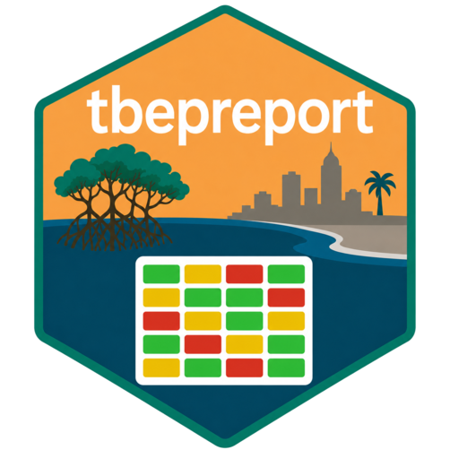

Combine water quality indicators into a single long-format table
Source:R/anlz_wq_indicators.R
anlz_wq_indicators.RdCombine water quality indicators into a single long-format table
Arguments
- wqattain
output of
anlz_wq_attain- wqthresh
output of
anlz_wq_thresh- wqload
output of
anlz_wq_load- wqtidalcreeks
output of
anlz_wq_tidalcreeks- wqfib
output of
anlz_wq_fib
Value
A data.frame with columns bay_segment, yr,
indicator ("wq_attain", "chla_thresh",
"la_thresh", "tn_load", "tnhy_load",
"tidal_creeks", "fib"), and outcome (0-1, 1 = best)
Details
Stacks (bind_rows) rather than joins the
five water quality indicators, since bay segment/year coverage differs by
indicator - a segment/year missing from one indicator's source data
simply has no row for it, rather than an NA-filled one.
Examples
if (FALSE) { # \dontrun{
anlz_wq_indicators(
anlz_wq_attain(tbeptools::epcdata),
anlz_wq_thresh(tbeptools::epcdata),
anlz_wq_load(totanndat),
anlz_wq_tidalcreeks(tbeptools::tidalcreeks, tbeptools::iwrraw, yrs = 2015:2020),
anlz_wq_fib(tbeptools::enterodata)
)
} # }